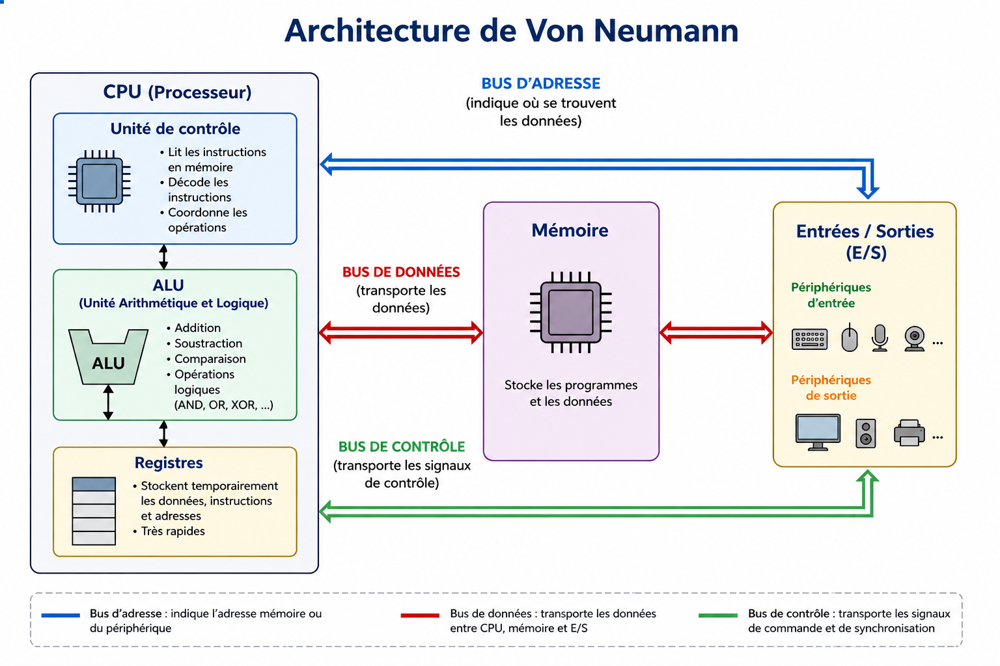
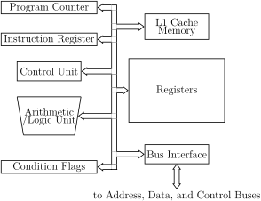

Un ordinateur est une machine capable de lire des instructions, manipuler des données et produire un résultat. Pour faire cela efficacement, les ordinateurs sont organisés selon une structure bien précise appelée architecture.
L’architecture définit comment les différents composants de l’ordinateur sont organisés et comment ils communiquent entre eux.
Les premiers ordinateurs du XXᵉ siècle étaient très différents de ceux d’aujourd’hui. Ils utilisaient des tubes électroniques, prenaient énormément de place et consommaient beaucoup d’électricité.
Aujourd’hui, presque tous les ordinateurs utilisent une architecture inspirée de celle de John von Neumann.
Elle organise l’ordinateur en quatre grandes parties :

Le processeur est le cerveau de l’ordinateur. Il exécute les instructions des programmes.

La mémoire stocke les informations nécessaires à l’ordinateur.
Les entrées/sorties permettent à l’ordinateur de communiquer avec l’extérieur.
Les bus permettent aux composants de communiquer entre eux via des fils électriques.
Le fonctionnement repose sur un cycle appelé cycle d’instruction :
Ce cycle se répète des milliards de fois par seconde dans les processeurs modernes.
Depuis les premiers ordinateurs, les architectures ont énormément évolué :
Malgré ces évolutions, les principes de von Neumann restent fondamentaux.
Il existe d’autres architectures que celle de von Neumann, comme l’architecture Harvard, où les données et les instructions sont stockées dans des mémoires séparées, ou encore des architectures modernes comme ARM ou les architectures parallèles utilisées dans les supercalculateurs.
Cependant, malgré ces alternatives, l’architecture de von Neumann s’est imposée comme la base de la majorité des ordinateurs actuels grâce à sa simplicité et sa flexibilité.
En grande majorité, un ordinateur repose sur quatre éléments essentiels :
Grâce à cette organisation, un ordinateur peut exécuter des programmes et traiter des données à très grande vitesse.